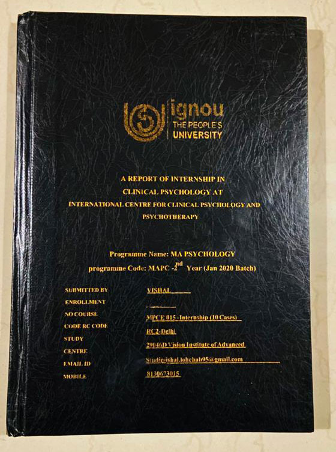

Mission / Internships
Internships
Internship for psychology students
The internship is only for ICCPP student members and is sponsored by ICCPP. Work is online. All interns receive a certificate and prepare complete documentation of the internship.

Coursework
What interns study and practise
- Guest lectures by eminent personalities in the field of Psychology and Psychiatry
- Case history taking
- Mental Status Examination
- Interviewing patients
- Assessment and diagnosis – Prof. Dr. Hans-Werner Gessmann
- Administration of psychological tests – Prof. Dr. Hans-Werner Gessmann
- Scoring and interpretation of test results and arriving at a correct diagnosis of the problem
- Providing individual and group psychotherapy
- Behavioral treatment
- Working with an interdisciplinary treatment team
- Assistance in internship report writing
- Regular assigments to assess the level of understanding of students and doubt solving sessions
How to apply
When will the internship start and how to apply?
ICCPP Student Members have to send their internship proposal on iccppglobal@gmail.com email. Members will get the approval mail from ICCPP. After approval members internship will start.
Supervisor
Who will be the agency supervisor?
Prof. Dr. Hans-Werner Gessmann (Clinical Psychologist)
PhD. Clinical Psychology – director of ICCPP
External Wikipedia article: en.wikipedia.org/wiki/Hans-Werner_Gessmann
Note
Certificates and documentation
All interns will also get internship certificates. You prepare a complete documentation of your internship.
For any query, contact iccppglobal@gmail.com.